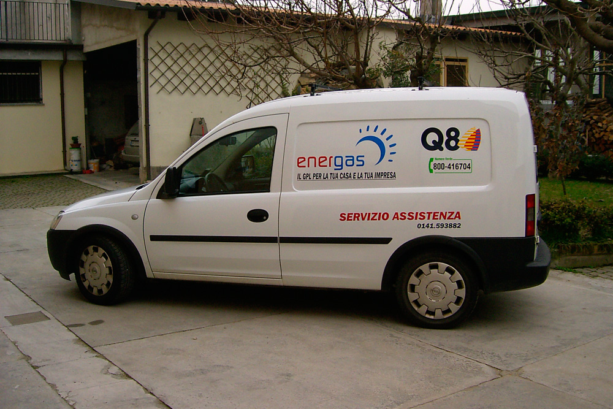
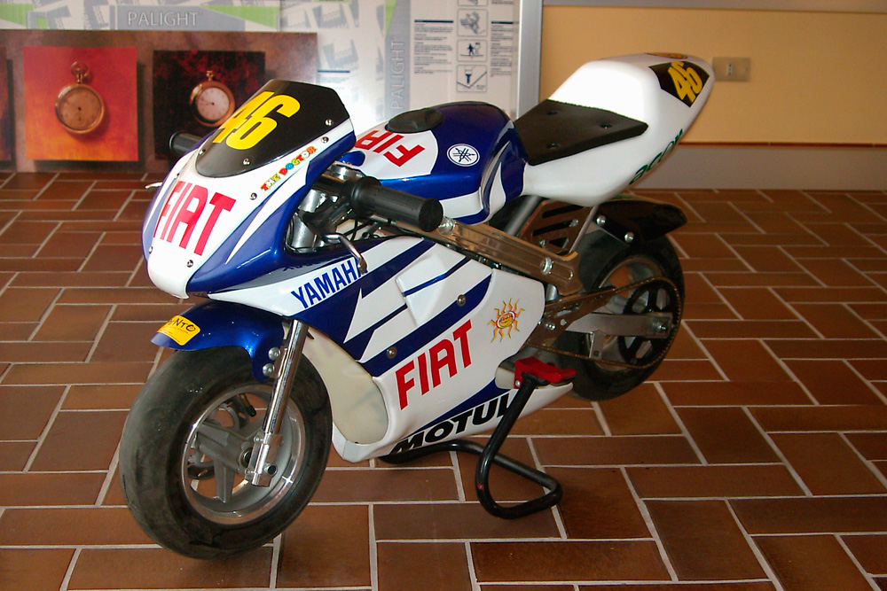
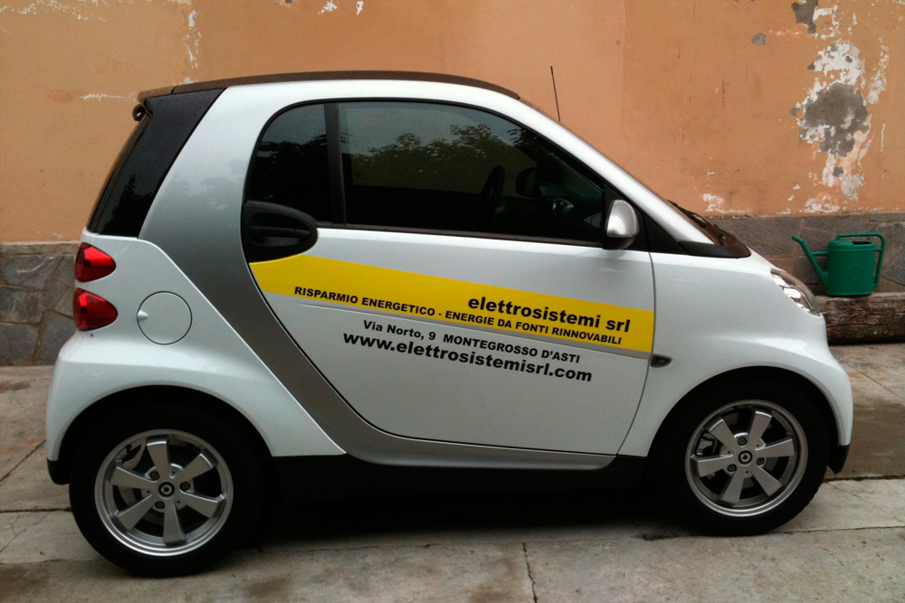

<div class="container imgautomezzi">
    <div class="row">
        <div class="col-12 col-md-6">
            <div class="jumbotron my-2">

                <p class="text-justify">
                    <strong>L'automezzo </strong> aziendale <strong>porta la vostra immagine dal cliente</strong>. Lo studio degli spazi a disposizione sul veicolo permette di sviluppare la decorazione automezzi mettendo in evidenza il messaggio pubblicitario. <strong>Punto99</strong> realizza la decorazione per gli automezzi sfruttando tutte le <strong>tecniche decorative</strong> della grafica adesiva, come <strong>stampa digitale</strong> su materiale adesivo e <strong>intaglio</strong>. </p>
            </div>
        </div>

        <div class="mx-auto">
            <a href="images/automezzo1.jpg" data-lightbox=gallery>
               
            </a>

            <a href="images/automezzo2.jpg" data-lightbox=gallery>
               
            </a>
            <a href="images/automezzo3.jpg" data-lightbox=gallery>
               
            </a>


        </div>
    </div>
